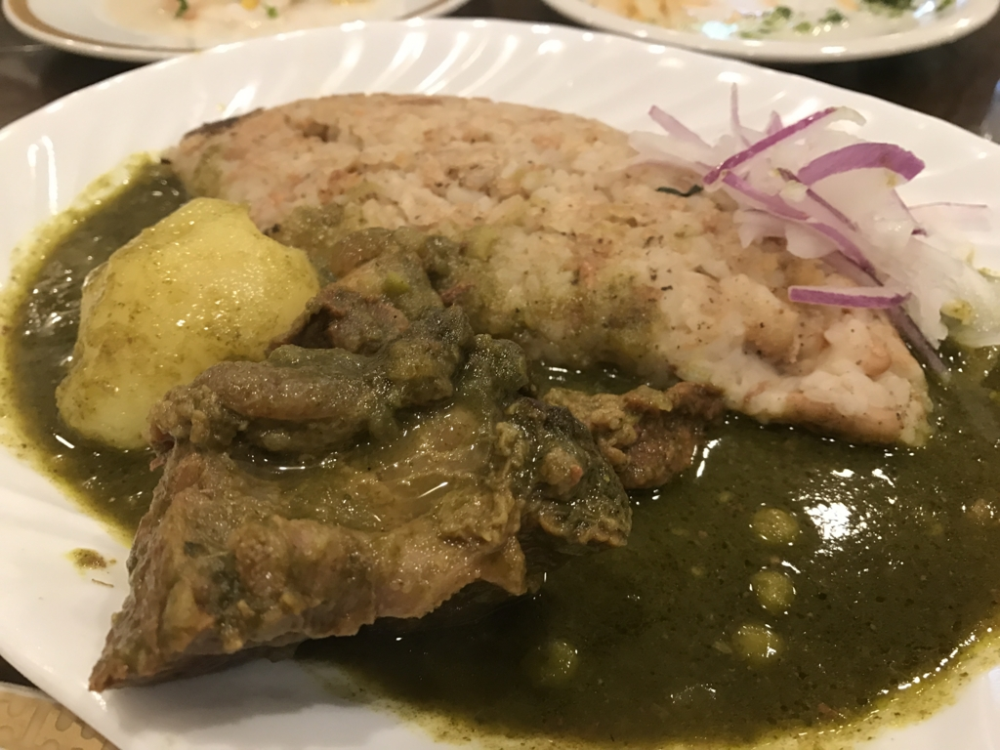

『世界の片隅に』を観なかった。
公開日：
とある週末。友人と映画『世界の片隅に』を見る約束をして、はるばる千葉・市川から川崎へ出かけた。
しかし、割と人気なタイトルのようで、席が劇場の隅っこしか空いていない。個人的には「『世界の片隅に』を“劇場の片隅に”観るのもオツだな（ﾌﾟｰﾌﾟｰｸｽｸｽ」と思っていたのだけど、連れの友人はあまり気が進まなかったようだ。逡巡ののちようやく見る決心がついたものの、そのときにはナケナシの“片隅席”もとられてしまい、結局映画を見逃してしまった。
そんなわけで、ペルー料理を食べることにした。
以前は『インティライミ』というお店をひいきにしていたのだけど、残念ながら店を移してしまったらしい（お店的には栄転なのかな？ おめでとう！）ので、今回は新しいところを開拓。結果的にはいい感じだった。
ペルー料理やさん (@ アルコ イリス 川崎店 in 川崎市, 神奈川県) https://t.co/5d5PJOJLD3
— だるやなぎ に天使が舞い降りた！ (@daruyanagi) 2016年12月4日
まずは、いつものジャガイモと謎のホワイトなソース。このソース、どうやって作ってるんかなぁ……ニンニクとか入っていそう。割と癖になる味だと思う。
次はタコのサラダ。タコを食べるひとは少ないらしいけど（ギリシャとか？）、ペルーの人はタコ食べるんだな？

何のお肉か忘れたけど、おいしいお肉。素材を生かした軽い味付け。
お店がクリスマスな雰囲気だったので、チキンもたのんだった。このお店の一押しなのかな？
豆料理も食べたかったので、こっちもチョイス。ペルーの人は豆いっぱい食べるイメージ。

個人的に興味があったので白身魚のフライも頼んでみたけど、思ってたより大きかった。ちょっと後悔した。
二人では食べきれなかったのだけど、なんとかどの皿も7割以上たいらげた。死ぬかと思った。今度来るときはあと何人か援軍がほしいな～